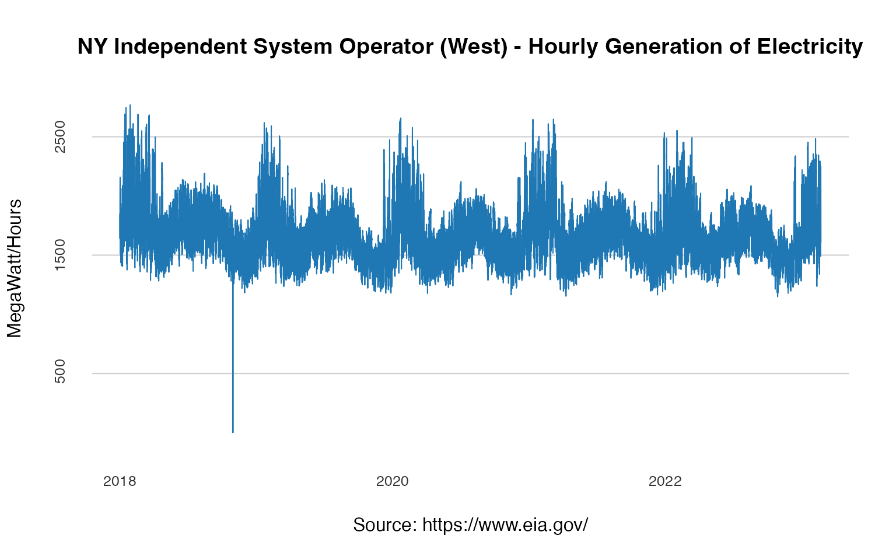

One of the limitations of the EIA API is the 5000 observations limit
per call. This could be challenging if you are trying to pull hourly
time series, which is roughly 26280 observations per year. The
eia_backfill function solves this issue and removes the API
number of observations per call limit. On the backend, the function
splits the query into multiple sequential queries, pulls the data, and
returns an append object.
For example, let’s pull hourly generation of electricity by New York
Independent System Operator on sub-region West using the
eia_backfill function:
library(EIAapi)
start <- as.POSIXlt("2018-06-19T00", tz = "UTC")
end <- lubridate::floor_date(Sys.time()- lubridate::days(2), unit = "day")
attr(end, "tzone") <- "UTC"
offset <- 5000
api_key <- Sys.getenv("eia_key")
api_path <- "electricity/rto/region-sub-ba-data/data/"
facets = list(parent = "NYIS",
subba = "ZONA")
df <- eia_backfill(start = start,
end = end,
offset = offset,
api_key = api_key,
api_path = api_path,
facets = facets)As you can see below, the return series has more than 45,000 observations:
head(df)
#> time subba subba_name parent
#> 1 2018-06-19 05:00:00 ZONA West NYIS
#> 2 2018-06-19 06:00:00 ZONA West NYIS
#> 3 2018-06-19 07:00:00 ZONA West NYIS
#> 4 2018-06-19 08:00:00 ZONA West NYIS
#> 5 2018-06-19 09:00:00 ZONA West NYIS
#> 6 2018-06-19 10:00:00 ZONA West NYIS
#> parent_name value value_units
#> 1 New York Independent System Operator 1848 megawatthours
#> 2 New York Independent System Operator 1754 megawatthours
#> 3 New York Independent System Operator 1699 megawatthours
#> 4 New York Independent System Operator 1650 megawatthours
#> 5 New York Independent System Operator 1640 megawatthours
#> 6 New York Independent System Operator 1673 megawatthours
nrow(df)
#> [1] 45074
at_y <- pretty(df$value)[c(2, 4, 6)]
at_x <- seq.POSIXt(from = start,
to = end,
by = "2 years")
plot(df$time, df$value,
col = "#1f77b4",
type = "l",
frame.plot = FALSE,
axes = FALSE,
panel.first = abline(h = at_y, col = "grey80"),
main = "NY Independent System Operator (West) - Hourly Generation of Electricity",
xlab = "Source: https://www.eia.gov/",
ylab = "MegaWatt/Hours")
mtext(side =1, text = format(at_x, format = "%Y"), at = at_x,
col = "grey20", line = 1, cex = 0.8)
mtext(side =2, text = format(at_y, scientific = FALSE), at = at_y,
col = "grey20", line = 1, cex = 0.8)